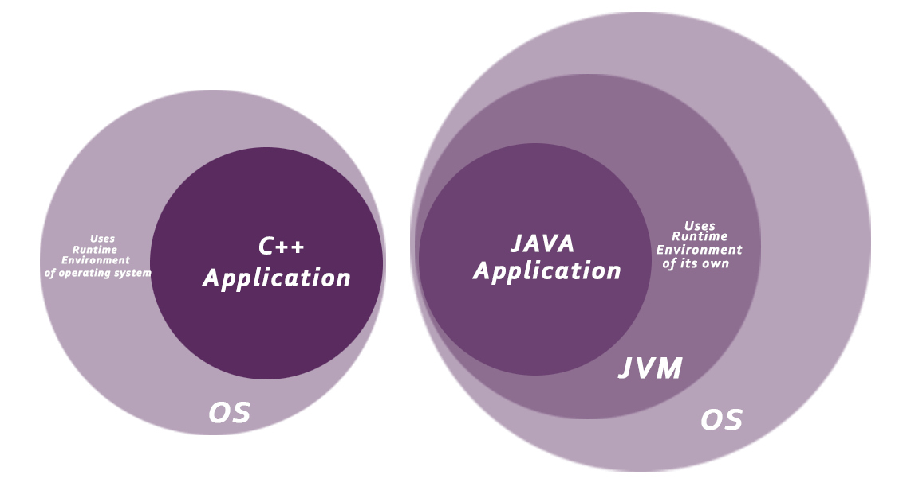
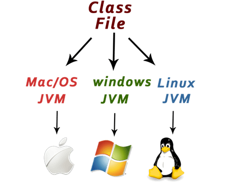

Characteristics of Java
The main objective of Java programming language creation was to make it portable, simple and secure
programming language. Apart from this, there are also some awesome features which play important
role in the popularity of this language.

-
Object-oriented:
Java is object-oriented programming language. Everything in Java is an object. Object-oriented means we organize our software as a combination of different types of objects that incorporates both data and behaviour.
Object-oriented programming (OOPs) is a methodology that simplifies software development and maintenance by providing some rules.
-
Simple:
Java is very easy to learn and its syntax is simple, clean and easy to understand. According to Sun, Java language is a simple programming language because:
Java syntax is based on C++ (so easier for programmers to learn it after C++).
Java has removed many confusing and rarely-used features e.g. explicit pointers, operator overloading etc.
There is no need to remove unreferenced objects because there is Automatic Garbage Collection in java.
-
Secured:
Java is best known for its security. With Java, we can develop virus-free systems. Java is secured because:-
i) No explicit pointer
ii) Java Programs run inside virtual machine sandbox
 iii) Classloader: Classloader in Java is a part of the Java Runtime Environment(JRE) which is used to dynamically load Java classes into the Java Virtual Machine. It adds security by separating the package for the classes of the local file system from those that are imported from network sources.
iv) Bytecode Verifier: It checks the code fragments for illegal code that can violate access right to objects.
v) Security Manager: It determines what resources a class can access such as reading and writing to the local disk.
-
Platform Independent:
Java is platform independent because it is different from other languages like C, C++ etc. which are compiled into platform specific machines while Java is a write once, run anywhere language. A platform is the hardware or software environment in which a program runs.
The Java platform is a software-based platform that runs on the top of other hardware-based platforms. It has two components:
a) Runtime Environment
 b) API(Application Programming Interface)
Java code can be run on multiple platforms e.g. Windows, Linux, Sun Solaris, Mac/OS etc. Java code is compiled by the compiler and converted into bytecode. This bytecode is a platform-independent code because it can be run on multiple platforms i.e. Write Once and Run Anywhere(WORA).
-
Robust:
Robust simply means strong. Java is robust because:
- It uses strong memory management.
- There are lack of pointers that avoids security problems.
- There is automatic garbage collection in java which runs on the Java Virtual Machine to get rid of objects which are not being used by a Java application anymore.
- There is exception handling and type checking mechanism in java.
-
Portable:
Java is portable because it facilitates you to carry the java bytecode to any platform. It doesn't require any type of implementation.
-
Architecture-neutral:
Java is architecture neutral because there is no implementation dependent features e.g. size of primitive types is fixed.
-
Dynamic:
Java is a dynamic language. It supports dynamic loading of classes. It means classes are loaded on demand. It also supports functions from its native languages i.e. C and C++. Java also supports dynamic compilation and automatic memory management (garbage collection).
-
Interpreted:
Java supports cross-platform code through the use of Java bytecode. Bytecode can be interpreted on any platform by JVM. Java byte code is translated on the fly to native machine instructions and is not stored anywhere. The development process is more rapid and analytical since the linking is an incremental and light-weight process.
-
High-performance:
Java is faster than other traditional interpreted programming languages because Java bytecode is "close" to native code. It is still a little bit slower than a compiled language (e.g. C++). Java is an interpreted language that is why it is slower than compiled languages e.g. C, C++ etc.
-
Multi-threaded:
A thread is like a separate program, executing concurrently. We can write Java programs that deal with many tasks at once by defining multiple threads. The main advantage of multi-threading is that it doesn't occupy memory for each thread. It shares a common memory area. Threads are important for multi-media, Web applications etc.
-
Distributed:
Java is distributed because it facilitates users to create distributed applications in java. RMI and EJB are used for creating distributed applications. This feature of Java makes us able to access files by calling the methods from any machine on the internet.